أسئلة امتحانات الثانوية العامة (الفرع العلمي) من 2017 إلى 2025 مصنفة على هذا الفصل: 20 سؤال اختيار من متعدد و41 سؤال مقالي ومسألة. اضغط على خيار لترى إن كان صحيحاً مع الشرح، وحاول حل المسائل قبل ما تفتح الإجابة.
تصادم جسمان تصادماً مرناً، الأول كتلته $m$ ويتحرك بسرعة $2v$ باتجاه جسم آخر كتلته $\mathrm{2m}$ يتحرك بسرعة مقدارها $v$ نحو الجسم الأول، فكم تساوي السرعة النسبية للجسمين بعد التصادم مباشرة؟
في التصادم المرن: $(v_{1f}-v_{2f})=-(v_{1i}-v_{2i})=-(2v-(-v))=-3v$
22022 د1 علمي
اصطدم جسم $m$ وسرعته $v$ تصادماً عديم المرونة مع جسم آخر ساكن كتلته $\mathrm{3m}$، فإن الطاقة الحركية المتبقية للجسمين بعد التصادم:
اصطدم جسم كتلته $m$ وسرعته $v$ تصادماً عديم المرونة مع جسم آخر ساكن كتلته ثلاثة أمثال كتلة الأول، ما الطاقة الحركية الضائعة نتيجة التصادم؟
الضائعة $=\frac12mv^2-\frac18mv^2=\frac38mv^2$
42020 د3
اصطدمت كرة كتلتها $\mathrm{2\,kg}$ تتحرك بسرعة $\mathrm{2\,m/s}$ بكرة أخرى ساكنة كتلتها $\mathrm{3\,kg}$ تصادماً مرناً، فما مقدار التغير في الطاقة الحركية الناتج عن التصادم بوحدة الجول؟
في التصادم المرن تكون الطاقة الحركية الكلية محفوظة.
52019 د1
إذا سقطت كرة على الأرض وارتدت إلى نفس الارتفاع الذي سقطت منه فإن:
ارتدت بنفس السرعة فلم تفقد طاقة حركية.
62019 د3
في الشكل المجاور: ثلاث كرات زجاجية متماثلة الكتلة $(A,B,C)$، إذا تحركت الكرة $(C)$ بسرعة مقدارها $\mathrm{12\,m/s}$ نحو الكرتين $(A,B)$ الساكنتين والمتلامستين فاصطدمت بالكرة $(A)$ تصادماً مرناً – بإهمال الاحتكاك – فإنه بعد التصادم مباشرة:
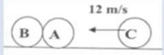
في التصادم المرن بين كتلتين متساويتين تتبادلان السرعات، فتنتقل السرعة من $C$ إلى $A$ ثم إلى $B$.
72019 د2
ما الصيغة التي تمثل القانون الثالث لنيوتن في التصادم بين جسمين؟
قوة الجسم الأول على الثاني تساوي وتعاكس قوة الثاني على الأول، ولهما نفس الزمن.
82020 د1
في تجربة السكة الهوائية تصادمت عربتان مختلفتان في الكتلة وتتحركان باتجاهين متعاكسين تصادماً مرناً، فإذا كانت كتلة العربة الأولى $m$، وكتلة العربة الثانية $\mathrm{4m}$ وسرعة العربة الأولى قبل التصادم $v$ وسرعة العربة الثانية قبل التصادم $2v$، فما مقدار السرعة النسبية للعربتين بعد التصادم؟
في التصادم المرن مقدار السرعة النسبية لا يتغير: $v-(-2v)=3v$
92017 د3
عند اصطدام كرتين إحداهما أكبر كتلة من الأخرى، فإن مقدار القوة التي تحدثها كل منهما على الأخرى تكون:
قانون نيوتن الثالث.
102020 د2
أي العبارات الآتية صحيحة بالنسبة للتصادم غير المرن؟
الزخم محفوظ في كل أنواع التصادم، فالدفعان متساويان ومتعاكسان. (أ) و(د) صحيحتان للتصادم المرن فقط.
112020 د3 و2019
اصطدم جسم $(A)$ كتلته $(m_1)$ ومتحرك بسرعة $(v_1)$ بكرة كتلتها $(m_2)$ وسرعتها $(v_2)$ حيث $(m_1\gt m_2)$ و $(v_2\gt v_1)$ تصادماً عديم المرونة، فإن التغير في الزخم:
حفظ الزخم: $\Delta P_1=-\Delta P_2$ في أي تصادم.
122020 د1
كرتان $(A,B)$ متماثلتان في الكتلة ومعلقتان بخيطين طول كل منهما $\mathrm{1\,m}$، سحبت الكرة $(A)$ حتى أصبح الخيط أفقياً، وتركت لتسقط من السكون وتصطدم بالكرة $(B)$ الساكنة عند أخفض نقطة تصادماً عديم المرونة، ما الارتفاع الذي تصل إليه الكرتان معاً بعد التصادم؟
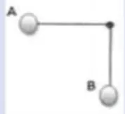
سرعة الكرتين معاً بعد التصادم نصف سرعة $A$، والارتفاع يتناسب مع مربع السرعة: $h'=\frac14(1)=0.25\,\mathrm{m}$
132020 د2
في الشكل المجاور، ما الذي يجعل عدد الكرات التي تنطلق بعد التصادم يساوي عدد الكرات المتحركة قبل التصادم؟
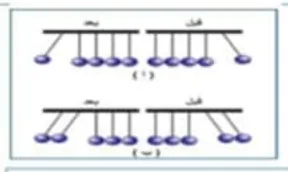
التصادم مرن: يجب أن يتحقق حفظ الزخم وحفظ الطاقة الحركية معاً.
142023 د1
في التصادم عديم المرونة، كم تكون النسبة بين الطاقة الحركية للنظام قبل التصادم إلى الطاقة الحركية له بعد التصادم؟
جزء من الطاقة الحركية يضيع فتكون $K_i\gt K_f$
152023 د1
في تصادم بين كرتين، أثرت الكرة الأولى على الثانية بقوة مقدارها $\mathrm{100\,N}$، فتغير زخم الكرة الثانية بمقدار $\mathrm{0.05\,N\cdot s}$، فما مقدار زمن تصادم الكرتين بوحدة $s$؟
$\Delta t=\dfrac{\Delta P}{F}=\dfrac{0.05}{100}=5\times10^{-4}\,\mathrm{s}$. ملاحظة: الناتج الدقيق $0.0005$، والخيار الأقرب الذي اعتمده مفتاح الإجابة هو $0.005$ (يبدو خطأً مطبعياً في السؤال).
162023 استكمالية
في التصادم عديم المرونة بين جسمين، أي من الآتية تعتبر صحيحة؟
يلتحم الجسمان ويتحركان بنفس السرعة فتنعدم السرعة النسبية بعد التصادم.
172025 د1
أي الكميات الفيزيائية تبقى محفوظة دائماً في أية عملية تصادم في نظام معزول؟
الزخم محفوظ في جميع أنواع التصادمات في النظام المعزول.
182025 د1
اصطدم جسم كتلته $m$ وسرعته $V$ تصادماً عديم المرونة مع جسم آخر ساكن له نفس الكتلة، ما الطاقة الضائعة نتيجة التصادم؟
أي العبارات الآتية صحيحة بالنسبة للتصادم غير المرن؟
الزخم محفوظ لكن الطاقة الحركية غير محفوظة.
202025 د2
جسم كتلته $m$ يتحرك بسرعة $V$ نحو جسم آخر ساكن كتلته $\mathrm{2m}$، اصطدم به وارتد في الاتجاه المعاكس، إذا علمت أن الدفع المؤثر على الجسم الساكن يساوي $\frac{4mV}{3}$، فجد مقدار سرعة الجسم الأول بعد التصادم مباشرة؟
دفع الجسم الأول $=-\frac{4mV}{3}=m(v_1-V)$ ⇐ $v_1=-\frac13V$ (ارتد بسرعة $\frac13V$)
السؤال الثاني (أ): ما المقصود بـ
12022 د2 علمي وصناعي
البندول القذفي
أظهر الإجابة
جهاز يستخدم لقياس سرعة المقذوفات (كالرصاصة)، يتكون من قطعة خشبية معلقة بخيط تستقر فيها الرصاصة بعد التصادم (تصادم عديم المرونة) فترتفع لمسافة رأسية تُحسب منها السرعة.
22021 د1 صناعي وعلمي و2017 د3
التصادم غير المرن
أظهر الإجابة
التصادم الذي يكون فيه الزخم الخطي محفوظاً، والطاقة الحركية غير محفوظة.
32018 د2
التصادم المرن
أظهر الإجابة
التصادم الذي يكون فيه كل من الزخم الخطي والطاقة الحركية محفوظين.
42020 د2
النظام المعزول
أظهر الإجابة
النظام الذي تكون فيه محصلة القوى الخارجية المؤثرة عليه تساوي صفراً.
السؤال الثاني (ب): علّل لما يلي
12021 د1 صناعي وعلمي
تكون الطاقة الحركية المفقودة في التصادم عديم المرونة كبيرة جداً.
أظهر الإجابة
لأن الجسمين يلتحمان معاً بعد التصادم ويتحركان كجسم واحد، فيتحول جزء كبير من الطاقة الحركية إلى أشكال أخرى من الطاقة (حرارة وصوت وتشوه).
22019 د3
إذا سقطت كرة من الطين اتجاه أرضية صلبة فإنها لا ترتد بشكل ملحوظ.
أظهر الإجابة
لأن التصادم عديم المرونة (تلتصق الكرة بالأرض) فتفقد معظم طاقتها الحركية وتتحول إلى أشكال أخرى من الطاقة مثل التشوه والحرارة.
32020 د3 و2024 و2025
هناك فقد كبير للطاقة الحركية في التصادم عديم المرونة.
أظهر الإجابة
لأن الجسمين يلتحمان معاً ويتحركان كجسم واحد، فيتحول جزء كبير من الطاقة الحركية إلى أشكال أخرى من الطاقة كالحرارة والصوت والتشوه.
42023 استكمالية
في التصادم عديم المرونة تكون النسبة بين الطاقة الحركية للنظام قبل التصادم إلى الطاقة الحركية للنظام بعد التصادم مباشرة أكبر من واحد.
أظهر الإجابة
لأن جزءاً من الطاقة الحركية يضيع أثناء التصادم (يتحول إلى طاقة حرارية وصوتية وتشوه)، فتكون $K_i\gt K_f$ ⇐ $\dfrac{K_i}{K_f}\gt 1$
السؤال الثاني (ج): قارن
12022 د1 صناعي و2023
قارن بين التصادم المرن والتصادم عديم المرونة من حيث: حفظ الزخم الخطي، السرعة النسبية للجسمين قبل وبعد التصادم.
أظهر الإجابة
حفظ الزخم الخطي: محفوظ في كليهما. السرعة النسبية: في المرن: السرعة النسبية بعد التصادم تساوي السرعة النسبية قبله مقداراً وتعاكسها اتجاهاً $(v_{1f}-v_{2f}=-(v_{1i}-v_{2i}))$. في عديم المرونة: السرعة النسبية بعد التصادم تساوي صفراً (يتحرك الجسمان بسرعة واحدة).
السؤال الثالث: المسائل الحسابية
12022 د1 علمي
يبين الشكل المجاور تصادم كرتين، الأولى كتلتها $\mathrm{1\,kg}$ وتسير بسرعة $\mathrm{10\,m/s}$ والثانية ساكنة وكتلتها $\mathrm{2\,kg}$، وبعد التصادم تحركت الكرة الأولى باتجاه يصنع زاوية مقدارها $37^\circ$ مع اتجاهها الأصلي وتحركت الثانية باتجاه عمودي على اتجاه الأولى بعد التصادم، جد سرعة كل من الكرتين بعد التصادم.
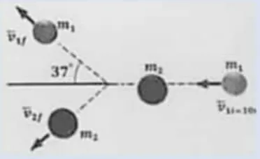
أظهر الإجابة
الكرة الثانية تصنع زاوية $53^\circ$ مع الاتجاه الأصلي. محور $y$: $1\,v_1\sin37=2\,v_2\sin53$ ⇐ $0.6v_1=1.6v_2$ ⇐ $v_1=\frac83v_2$ محور $x$: $10=v_1\cos37+2v_2\cos53=0.8v_1+1.2v_2$ ⇐ $v_2=3\,\mathrm{m/s}$ و $v_1=8\,\mathrm{m/s}$
22022 د1 علمي وصناعي
ينزلق جسم كتلته $\mathrm{2\,kg}$ من السكون من ارتفاع $h$ على مستوى أملس، وعند أسفل المستوى اصطدم بجسم آخر ساكن كتلته $\mathrm{2\,kg}$، وبعد التصادم التحم الجسمان وتحركا معاً كجسم واحد بطاقة حركية مقدارها $\mathrm{50\,J}$، جد: (أ) الارتفاع $h$ الذي انزلق منه الجسم الأول $m_1$ (ب) الدفع المؤثر على الجسم الثاني.
أثرت قوة مقدارها $\mathrm{15\,N}$ على جسم ساكن كتلته $\mathrm{0.5\,kg}$ لمدة $\mathrm{0.4\,s}$، فانطلق على سطح أفقي أملس ليصطدم بجسم آخر كتلته $\mathrm{2\,kg}$ يتحرك بنفس الاتجاه بسرعة $\mathrm{1\,m/s}$، فإذا كان التصادم مرناً، احسب سرعة كل من الجسمين بعد التصادم مباشرة.
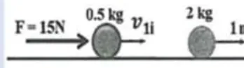
أظهر الإجابة
$v_{1i}=\dfrac{F\Delta t}{m}=\dfrac{15\times0.4}{0.5}=12\,\mathrm{m/s}$ حفظ الزخم: $0.5(12)+2(1)=0.5v_{1f}+2v_{2f}$ ⇐ $8=0.5v_{1f}+2v_{2f}$ تصادم مرن: $v_{1f}-v_{2f}=-(12-1)=-11$ ⇐ $v_{2f}=5.4\,\mathrm{m/s}$ و $v_{1f}=-5.6\,\mathrm{m/s}$ (يرتد)
42022 د2 علمي
جسمان لهما نفس الكتلة، الأول يتحرك بسرعة مقدارها $v$ والثاني يتحرك بسرعة مقدارها $2v$ بحيث يصنعان بينهما زاوية مقدارها $\theta$ كما في الشكل، اصطدما معاً فتحرك الجسم الأول بعد التصادم بسرعة $\frac v2$، وتحرك الجسم الثاني بسرعة $v$ وكلاهما باتجاه الشرق، احسب الزاوية المحصورة بين اتجاه حركة الجسمين قبل التصادم مباشرة.
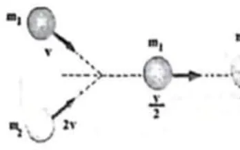
أظهر الإجابة
بعد التصادم: $P_f=m\frac v2+mv=\frac32mv$ شرقاً قبل التصادم: $P_i^2=(mv)^2+(2mv)^2+2(mv)(2mv)\cos\theta$ $\frac94=1+4+4\cos\theta$ ⇐ $\cos\theta=-0.6875$ ⇐ $\theta\approx133.4^\circ$
52022 د1 صناعي
كرة كتلتها $\mathrm{3\,kg}$ تسير بسرعة $\mathrm{6\,m/s}$ لتصطدم بكرة أخرى كتلتها $\mathrm{2\,kg}$ تتحرك باتجاهها وبسرعة مقدارها $\mathrm{8\,m/s}$ كما في الشكل المجاور، إذا كان مقدار الدفع المؤثر على كل منهما أثناء التصادم $\mathrm{20\,N\cdot s}$، جد سرعة كل من الكرتين بعد التصادم.
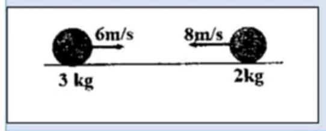
أظهر الإجابة
باعتبار اتجاه حركة الكرة $\mathrm{3\,kg}$ موجباً: $I_1=-20=3(v_1-6)$ ⇐ $v_1=-0.67\,\mathrm{m/s}$ (ترتد) $I_2=+20=2(v_2-(-8))$ ⇐ $v_2=2\,\mathrm{m/s}$ (باتجاه الحركة الأصلية للكرة الأولى)
62021 د1 صناعي وعلمي
أطلقت رصاصة كتلتها $\mathrm{30\,g}$ على قطعة خشبية ساكنة كتلتها $\mathrm{4.97\,kg}$ معلقة كما في الشكل، فكانت سرعة المجموعة بعد التصادم $\mathrm{1.26\,m/s}$. احسب: (1) سرعة الرصاصة قبل الاصطدام مباشرة (2) أقصى ارتفاع $h$ عن مستوى الاتزان تصله المجموعة بعد التصادم.
تتحرك كرة كتلتها $m$ باتجاه الغرب بسرعة $\mathrm{55\,m/s}$ فتصطدم تصادماً مرناً بأخرى ساكنة كتلتها $\mathrm{5\,kg}$. إذا ارتدت الكرة الأولى بسرعة $\mathrm{20\,m/s}$. احسب: (1) سرعة الكرة الثانية بعد التصادم مباشرة (2) كتلة الكرة الأولى.
تتحرك كرة كتلتها $\mathrm{2\,kg}$ باتجاه الغرب بسرعة $\mathrm{6\,m/s}$ فتصطدم بأخرى كتلتها $\mathrm{3\,kg}$ تتحرك باتجاه الشرق بسرعة $\mathrm{4\,m/s}$، إذا ارتدت الكرة الأولى بسرعة $\mathrm{4.5\,m/s}$ علماً بأن التصادم في بعد واحد، فاحسب: (1) سرعة الكرة الثانية بعد التصادم مباشرة (2) حدد نوع التصادم (3) زمن التصادم إذا علمت أن متوسط القوة التي أثرت بها الكرة الأولى على الثانية $\mathrm{(-1050\,N)}$
أظهر الإجابة
الغرب موجب. (1) $2(6)+3(-4)=2(-4.5)+3v_2$ ⇐ $v_2=3\,\mathrm{m/s}$ غرباً (2) $K_i=36+24=60\,\mathrm{J}$، $K_f=20.25+13.5=33.75\,\mathrm{J}$ ⇐ غير مرن (3) $I_2=3(3-(-4))=21\,\mathrm{N\cdot} s$ ⇐ $\Delta t=\dfrac{21}{1050}=0.02\,\mathrm{s}$
92021 د2 علمي
جسم ساكن على سطح أفقي أملس، اصطدم به تصادماً مرناً في بعد واحد جسم آخر متحرك سرعته $2v$ وكتلته مثلي كتلة الأول، فانطلق الأول بسرعة $v_{1f}$. أثبت أن: $\dfrac{v_{1f}}{v_{2f}}=\dfrac41$
أظهر الإجابة
$m_1=m$ (ساكن)، $m_2=2m$ بسرعة $2v$ حفظ الزخم: $2m(2v)=m v_{1f}+2m v_{2f}$ ⇐ $4v=v_{1f}+2v_{2f}$ مرن: $v_{1f}-v_{2f}=2v$ ⇐ $v_{2f}=\frac23v$ و $v_{1f}=\frac83v$ ⇐ $\dfrac{v_{1f}}{v_{2f}}=4$
102021 د2 صناعي
جسم كتلته $\mathrm{4\,kg}$ يتحرك لليمين بسرعة $\mathrm{2\,m/s}$، اصطدم بجسم آخر كتلته $\mathrm{2\,kg}$ ويتحرك في اتجاه معاكس وبمقدار السرعة نفسها. أجب عن الآتية: (1) احسب سرعة كل من الجسمين بعد التصادم مباشرة إذا كان التصادم مرناً (2) عرّف التصادم.
أظهر الإجابة
اليمين موجب. حفظ الزخم: $4(2)+2(-2)=4v_1+2v_2$ ⇐ $4=4v_1+2v_2$ مرن: $v_1-v_2=-(2-(-2))=-4$ ⇐ $v_1=-\frac23\,\mathrm{m/s}$ (لليسار) و $v_2=\frac{10}{3}\approx3.33\,\mathrm{m/s}$ (لليمين) (2) التصادم: تفاعل بين جسمين أو أكثر خلال فترة زمنية قصيرة جداً تؤثر خلالها قوى متبادلة كبيرة بينها.
112021 د2 صناعي
بندول طوله $\mathrm{1.8\,m}$ معلق به كرة كتلتها $\mathrm{1\,kg}$، سحبت الكرة حتى أصبح الخيط في وضع أفقي، ثم تركت لتسقط سقوطاً حراً فاصطدمت عند نقطة الاتزان بجسم ساكن كتلته $\mathrm{4\,kg}$ موضوع على سطح أفقي فارتدت الكرة بسرعة $\mathrm{3.6\,m/s}$، أجب عن: (1) احسب سرعة الكرة عندما تصل وضع الاتزان (2) احسب سرعة الجسم بعد التصادم مباشرة (3) ما نوع التصادم؟
تنزلق كتلة $\mathrm{10\,kg}$ من السكون من ارتفاع $\mathrm{5\,m}$ على مسار أملس وعلى أسفل المسار تصطدم اصطداماً عديم المرونة بكرة أخرى ساكنة كتلتها $\mathrm{6\,kg}$. احسب سرعة المجموعة بعد التصادم مباشرة.
في الشكل المجاور، يتحرك جسم $\mathrm{0.5\,kg}$ على سطح أفقي أملس بسرعة $v$، فيلتحم مع جسم آخر كتلته $\mathrm{2.5\,kg}$ ساكن على نفس السطح ومربوط بخيط طوله $\mathrm{1\,m}$ ثم تحرك الجسمان معاً حتى أصبح الخيط يميل عن مستواه الرأسي بزاوية $37^\circ$. احسب: (1) سرعة الجسمين معاً بعد التصادم مباشرة (2) سرعة الجسم الأول قبل التصادم مباشرة (3) مقدار الطاقة الحركية المفقودة.
أطلقت رصاصة كتلتها $\mathrm{0.2\,kg}$ بسرعة $\mathrm{400\,m/s}$ على قطعة خشبية ساكنة معلقة كبندول كتلته $\mathrm{1.8\,kg}$ وطول خيطه $\mathrm{10\,m}$، فاخترقتها وخرجت منها بسرعة $\mathrm{300\,m/s}$. احسب كلاً من: (1) سرعة القطعة الخشبية بعد الاصطدام مباشرة (2) جد أكبر زاوية يصنعها خيط البندول مع الخط الرأسي $(\theta)$.
كرة فولاذية كتلتها $\mathrm{1.5\,kg}$ وسرعتها $\mathrm{6\,m/s}$، لحقت بها كرة فولاذية أخرى كتلتها $\mathrm{0.5\,kg}$ وسرعتها $\mathrm{10\,m/s}$ واصطدمت بها على نفس خط تحركها الأفقي وفي اتجاه واحد، فأصبحت سرعة الكرة الثانية $\mathrm{4\,m/s}$ وبنفس اتجاه حركتها الأصلي. احسب: (1) سرعة الكرة الأولى بعد التصادم مباشرة (2) الطاقة الحركية الضائعة نتيجة التصادم.
كرة كتلتها $\mathrm{3\,kg}$ وتتحرك بسرعة $\mathrm{6\,m/s}$، اصطدمت بكرة أخرى ساكنة كتلتها $\mathrm{12\,kg}$، إذا تحركت الكرة الساكنة بعد التصادم مباشرة بسرعة $\mathrm{2.5\,m/s}$ على نفس الخط وبنفس اتجاه حركة الكرة الأولى قبل التصادم. احسب سرعة الكرة الأولى بعد التصادم.
أظهر الإجابة
$3(6)=3v_1+12(2.5)$ ⇐ $v_1=-4\,\mathrm{m/s}$ (ترتد بسرعة $\mathrm{4\,m/s}$)
172020 د2
تنزلق كتلة $\mathrm{4\,kg}$ من السكون من ارتفاع $\mathrm{3.2\,m}$ على مسار أملس وعند أسفل المسار تصطدم تصادماً مرناً بجسم آخر ساكن كتلته $m_2=8\,\mathrm{kg}$ كما في الشكل المجاور. احسب: (1) سرعة الجسم $m_2$ بعد التصادم مباشرة (2) أقصى ارتفاع تصل إليه الكتلة $m_1$ بعد التصادم مباشرة.
كرة كتلتها $\mathrm{0.4\,kg}$ تتحرك بسرعة $v$ فتصطدم تصادماً مرناً بشكل مباشر بكرة أخرى كتلتها $\mathrm{0.6\,kg}$ ساكنة فأصبحت سرعة الكرة الثانية بعد التصادم مباشرة $\mathrm{3\,m/s}$ بنفس اتجاه حركة الكرة الأولى قبل التصادم. احسب سرعة الكرة الأولى قبل وبعد التصادم مباشرة.
جسم كتلته $\mathrm{5\,kg}$ يتحرك في خط مستقيم بسرعة $\mathrm{20\,m/s}$ على سطح أفقي أملس، فإذا اصطدم به عمودياً جسم آخر كتلته $\mathrm{10\,kg}$ يتحرك على نفس السطح بسرعة $\mathrm{30\,m/s}$، والتصق الجسمان وسارا معاً كجسم واحد، احسب: (1) سرعة الجسمين الملتصقين بعد التصادم مباشرة مقداراً واتجاهاً (2) نسبة التغير في الطاقة الحركية نتيجة التصادم إلى الطاقة الحركية الأصلية للجسمين قبل التصادم مباشرة.
أظهر الإجابة
(1) $P_x=5(20)=100$، $P_y=10(30)=300$ ⇐ $P=\sqrt{100^2+300^2}\approx316.2$ ⇐ $v=\dfrac{316.2}{15}\approx21.1\,\mathrm{m/s}$ الاتجاه: $\tan\theta=\dfrac{300}{100}=3$ ⇐ $\theta\approx71.6^\circ$ مع اتجاه الجسم الأول (2) $K_i=1000+4500=5500\,\mathrm{J}$، $K_f=\frac12(15)(21.1)^2\approx3333\,\mathrm{J}$ ⇐ $\dfrac{\Delta K}{K_i}=\dfrac{-2167}{5500}\approx-0.39$
202023 د1
جسم ساكن كتلته $\mathrm{2\,kg}$ موضوع على سطح أفقي أملس، أثرت عليه قوة فأكسبته طاقة حركية مقدارها $324$ جول، ثم توقف تأثير القوة، فتابع الجسم حركته حتى التحم مع جسم آخر ساكن على نفس السطح كتلته $\mathrm{3\,kg}$، وتحرك الجسمان معاً، جد: (1) سرعة الجسمين بعد الالتحام مباشرة (2) التغير في طاقة حركة النظام.
في الشكل المقابل تنزلق كتلة $(m_1)$ من السكون من ارتفاع $(h)$ على مسار أملس، وعند أسفل المسار تصطدم اصطداماً مرناً بكتلة أخرى ساكنة $(m_2)$، فإذا كانت $(m_2=2m_1)$، أثبت أن سرعة الكتلة $(m_2)$ بعد الاصطدام مباشرة تعطى بالعلاقة: $V_{2f}=\dfrac43\sqrt{\dfrac{gh}{2}}$
اصطدمت رصاصة كتلتها $\mathrm{10\,g}$ بقطعة خشبية معلقة كتلتها $\mathrm{990\,g}$ فاستقرت بها، وارتفعت المجموعة عن وضع الاتزان مسافة $\mathrm{20\,cm}$، احسب سرعة الرصاصة قبل الاصطدام مباشرة.
تحرك جسم كتلته $m$ بسرعة مقدارها $V$ نحو جسم آخر ساكن وله نفس الكتلة، فاصطدم به وتحرك الجسمان في مسارين بينهما زاوية $(\theta)$ كما في الشكل أدناه، إذا كان التصادم مرناً بشكل تام، أثبت أن الزاوية $(\theta)$ تساوي $90^\circ$
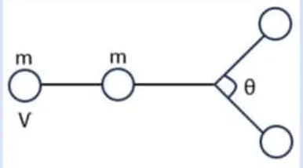
أظهر الإجابة
حفظ الزخم (متجهات): $\vec V=\vec v_1+\vec v_2$ ⇐ $V^2=v_1^2+v_2^2+2v_1v_2\cos\theta$ حفظ الطاقة: $V^2=v_1^2+v_2^2$ ⇐ $2v_1v_2\cos\theta=0$ ⇐ $\cos\theta=0$ ⇐ $\theta=90^\circ$
242023 استكمالية
جسم كتلته $\mathrm{3\,kg}$ يتحرك بسرعة مقدارها $\mathrm{6\,m/s}$ باتجاه الشرق، تصادم مع جسم آخر كتلته $\mathrm{6\,kg}$ ويتحرك في الاتجاه المعاكس بسرعة $\mathrm{6\,m/s}$، إذا كان زمن التصادم بينهما $\mathrm{0.2\,s}$، وكانت القوة المتبادلة بينهما خلال التصادم $\mathrm{240\,N}$ احسب: (1) سرعة كل من الجسمين بعد التصادم مباشرة (2) نوع التصادم.
في الشكل المجاور، كرة كتلتها $\mathrm{1.2\,kg}$ مربوطة بخيط مثبت من نقطة، أفلتت لتسقط من السكون من ارتفاع $(h)$ لتصطدم بجسم كتلته $\mathrm{3.6\,kg}$ ساكن على أرض أفقية ملساء تصادماً مرناً، فانطلق هذا الجسم بسرعة $\mathrm{1.5\,m/s}$. احسب: (1) الارتفاع الذي سقطت منه الكرة قبل التصادم $(h)$ (2) أقصى ارتفاع للكرة بعد التصادم $(h_f)$
جسم كتلته $\mathrm{2m}$ ويسير بسرعة مقدارها $\frac V2$، انفجر إلى جزأين متساويين في الكتلة بحيث استمر كل منهما بالحركة بسرعة تساوي مثلي سرعة الجسم الأصلية، بحيث يصنعان بينهما زاوية $(\theta)$، احسب: (1) مقدار الزاوية المحصورة بين الجزأين $(\theta)$ (2) مقدار الطاقة الحركية الناتجة من الانفجار.
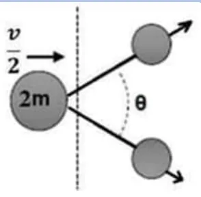
أظهر الإجابة
سرعة كل جزء $=2\times\frac V2=V$ (1) بالتماثل: $2m\cdot\frac V2=2\,\mathrm{mV}\cos\frac\theta2$ ⇐ $\cos\frac\theta2=\frac12$ ⇐ $\theta=120^\circ$ (2) $K_i=\frac12(2m)\frac{V^2}{4}=\frac14mV^2$، $K_f=2\times\frac12mV^2=mV^2$ ⇐ الطاقة الناتجة $=\frac34mV^2$
272024 د2
جسم كتلته $\mathrm{5\,kg}$ يتحرك في خط مستقيم أفقي بسرعة $\mathrm{20\,m/s}$ على سطح أملس، فإذا اصطدم به عمودياً جسم آخر كتلته $\mathrm{10\,kg}$ يتحرك بسرعة $\mathrm{30\,m/s}$، والتصق الجسمان وسارا معاً بالسرعة نفسها، احسب سرعة الجسمين الملتصقين بعد التصادم مباشرة مقداراً واتجاهاً.
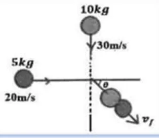
أظهر الإجابة
$P_x=5(20)=100$، $P_y=10(30)=300$ ⇐ $P=\sqrt{100^2+300^2}\approx316.2\,\mathrm{kg\cdot} m/s$ $v=\dfrac{316.2}{15}\approx21.1\,\mathrm{m/s}$، $\tan\theta=\dfrac{100}{300}$ ⇐ $\theta\approx18.4^\circ$ مع اتجاه حركة الجسم $\mathrm{10\,kg}$ (أي $71.6^\circ$ مع اتجاه الجسم $\mathrm{5\,kg}$)
282024 د2
تتحرك كرة كتلتها $\mathrm{2\,kg}$ باتجاه جدار بسرعة مقدارها $\mathrm{2\,m/s}$، فإذا اصطدمت بالجدار وأثر عليه بدفع مقداره $\mathrm{18\,N\cdot s}$ وارتدت إلى الخلف ثم اصطدمت بكرة ساكنة كتلتها $\mathrm{4\,kg}$، وتحركت الكرة الثانية بعد التصادم بسرعة $\mathrm{3\,m/s}$ وبنفس اتجاه الكرة الأولى، احسب: (1) متوسط القوة التي أثر بها الجدار على الكرة الأولى إذا كان زمن التصادم $\mathrm{0.1\,s}$ (2) سرعة الكرة الأولى بعد التصادم مباشرة.
أظهر الإجابة
(1) $\bar F=\dfrac{18}{0.1}=180\,\mathrm{N}$ (2) سرعة الارتداد عن الجدار: $2(v-2)=-18$ ⇐ $v=-7\,\mathrm{m/s}$ (7 مبتعدة عن الجدار) التصادم مع الكرة الثانية: $2(7)=2v_1+4(3)$ ⇐ $v_1=1\,\mathrm{m/s}$ بنفس الاتجاه ملاحظة: قيمة الدفع المعطاة في السؤال غير واقعية فيزيائياً (تجعل الكرة ترتد بسرعة أكبر من سرعة اصطدامها بجدار ساكن)، لكن الحل يعتمد على المعطيات كما هي.
292024 استكمالية
أثرت قوة مقدارها $\mathrm{100\,N}$ على جسم ساكن كتلته $\mathrm{1\,kg}$ لمدة $\mathrm{0.2\,s}$ فحركته على سطح أملس ثم اصطدم تصادماً مرناً بجسم آخر ساكن، وبعد التصادم ارتد الجسم الأول بسرعة تساوي ثلث سرعته قبل التصادم، احسب: (1) سرعة الجسم الأول قبل التصادم وبعد التصادم مباشرة (2) سرعة الجسم الثاني بعد التصادم مباشرة (3) كتلة الجسم الثاني.
جسم كتلته $\mathrm{2\,kg}$ يتحرك بسرعة $\mathrm{5\,m/s}$ اصطدم بجسم آخر كتلته $\mathrm{1\,kg}$ يتحرك نحوه بسرعة $\mathrm{2\,m/s}$ وكان زمن التصادم $\mathrm{0.1\,s}$ وقوة الدفع بينهما تساوي $\mathrm{60\,N}$، احسب: (1) سرعة الجسمين بعد التصادم مباشرة (2) ما نوع التصادم؟
أظهر الإجابة
الدفع $=60\times0.1=6\,\mathrm{N\cdot} s$ (1) $2(v_1-5)=-6$ ⇐ $v_1=2\,\mathrm{m/s}$، $1(v_2-(-2))=6$ ⇐ $v_2=4\,\mathrm{m/s}$ (كلاهما باتجاه حركة الأول) (2) $K_i=25+2=27\,\mathrm{J}$، $K_f=4+8=12\,\mathrm{J}$ ⇐ غير مرن
312025 د1
في الشكل المجاور أفلتت كرة من المعجون كتلتها $(m)$ من ارتفاع $(h)$ لتصطدم بكرة أخرى من المعجون ساكنة وكتلتها $\mathrm{(3m)}$ فالتحمت الكتلتان. أثبت أن: (1) سرعة الكرتين معاً تساوي ربع سرعة الأولى قبل التصادم مباشرة (2) أقصى ارتفاع ستصله الكرتان معاً يساوي: $h_2=\dfrac{h}{16}$
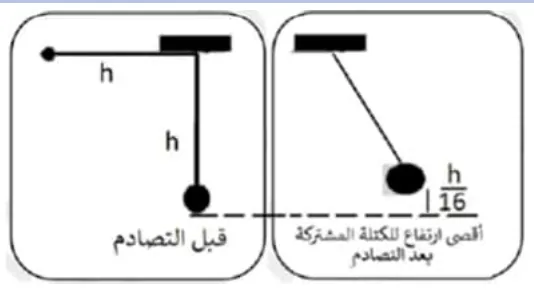
أظهر الإجابة
(1) $mv=4m\,v'$ ⇐ $v'=\dfrac v4$ (2) $h_2=\dfrac{v'^2}{2g}=\dfrac{v^2}{16(2g)}=\dfrac{h}{16}$ لأن $h=\dfrac{v^2}{2g}$
322025 د2
يتحرك جسم كتلته $\mathrm{1\,kg}$ في الاتجاه السيني الموجب $(+X)$ بسرعة $\mathrm{6\,m/s}$ ويتحرك جسم آخر كتلته $\mathrm{2\,kg}$ في الاتجاه الصادي الموجب $(+Y)$ بسرعة $\mathrm{4\,m/s}$، يصطدم الجسمان بشكل مباشر ويلتحمان. احسب كلاً من: (1) السرعة المشتركة للجسمين بعد الاصطدام مباشرة مقداراً واتجاهاً (2) الطاقة الضائعة نتيجة التصادم.